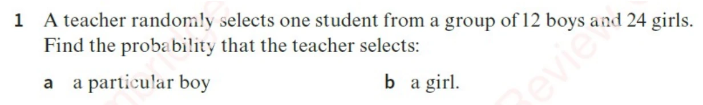
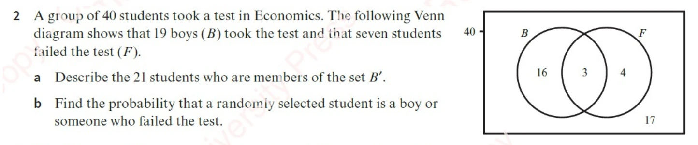
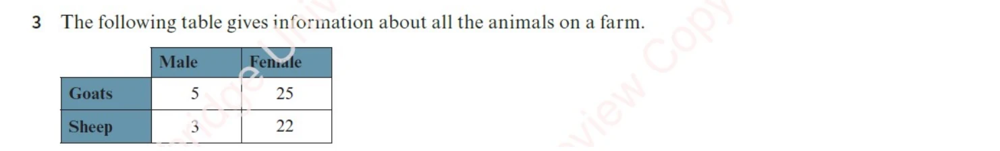
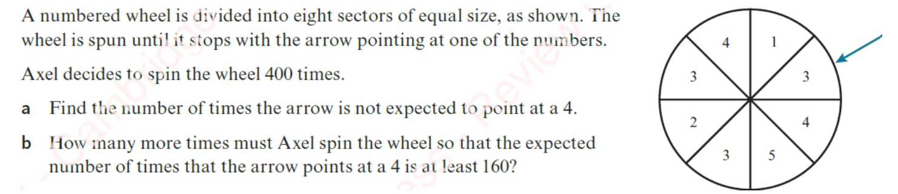
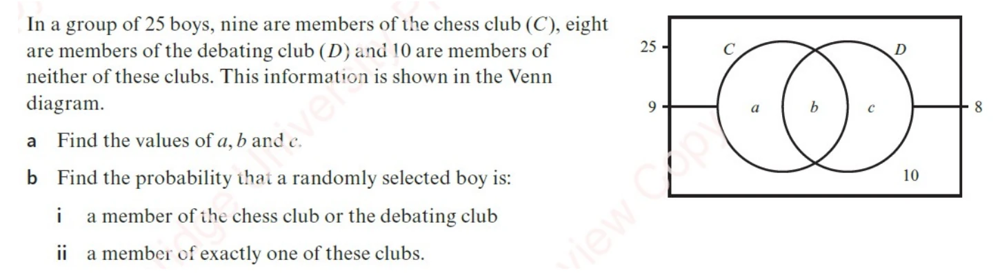
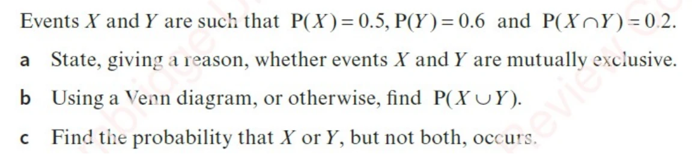
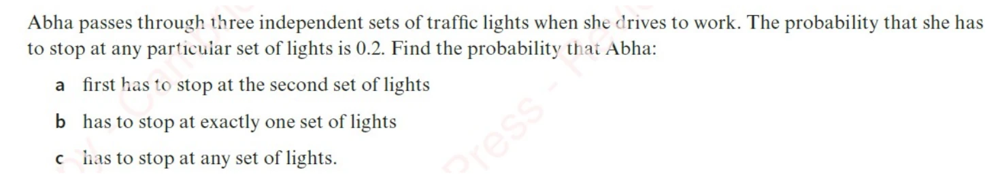
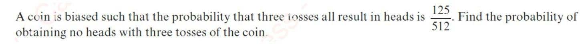
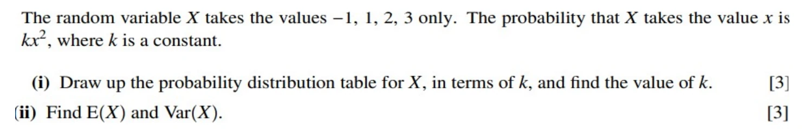

Probability Worksheet
Every question from WS Probability 01, shown exactly as it appears on the original sheet, with a full worked solution behind a dropdown. Try each one on paper first — the solution is one click away, so there is no reason to peek early. The rules being used are all in the Probability notes.
Question 1 — Simple Probability

Show solution
Probability = (number of outcomes you want) ÷ (total number of outcomes). Picture all 36 students lined up: “one particular boy” is just 1 of them, and “a girl” is any of 24.
"A particular boy" means one specific, named boy — a single outcome out of 36:
\[P = \frac{1}{36}\]Question 2 — Venn Diagram

Show solution
Each region of the Venn diagram is a separate group of students. B′ just means “not B” — everyone outside the boys’ circle. For “boy or failed”, count everything inside either circle, but count the middle (boys who failed) only once.
| Region | Meaning | Count |
|---|---|---|
| \(B\) only | Boys who passed | 16 |
| \(B \cap F\) | Boys who failed | 3 |
| \(F\) only | Girls who failed | 4 |
| Neither | Girls who passed | 17 |
Checks: total \(16+3+4+17 = 40\) ✓, boys \(16+3 = 19\) ✓, failed \(3+4 = 7\) ✓
\(B'\) is the complement of \(B\) — everyone who is not a boy. Since \(40 - 19 = 21\):
The 21 students in \(B'\) are the girls who took the Economics test (4 of whom failed and 17 of whom passed).
By the addition rule:
\[P(B \cup F) = P(B) + P(F) - P(B \cap F) = \frac{19}{40} + \frac{7}{40} - \frac{3}{40} = \frac{23}{40}\]Or just count the three shaded regions directly: \(16 + 3 + 4 = 23\) out of 40.
(a) The 21 girls who took the test · (b) 23/40 = 0.575Question 3 — Two-Way Table

The sub-questions for Q3 are missing from WS Probability 01.docx — the file gives the table but no parts (a), (b), … The solution below works out the full margin totals, which every version of this question needs, plus the probabilities such a question normally asks for.
Show working (margin totals & standard parts)
Fill in the row and column totals first — then every probability is just “cell ÷ total”. For a “given” question, the “given” part tells you which row or column becomes your new total.
| Male | Female | Total | |
|---|---|---|---|
| Goats | 5 | 25 | 30 |
| Sheep | 3 | 22 | 25 |
| Total | 8 | 47 | 55 |
- \(P(\text{goat}) = \frac{30}{55} = \frac{6}{11} \approx 0.545\)
- \(P(\text{female}) = \frac{47}{55} \approx 0.855\)
- \(P(\text{male goat}) = \frac{5}{55} = \frac{1}{11} \approx 0.091\)
- \(P(\text{goat or male}) = \frac{30}{55} + \frac{8}{55} - \frac{5}{55} = \frac{33}{55} = \frac{3}{5} = 0.6\)
- \(P(\text{female} \mid \text{sheep}) = \frac{22}{25} = 0.88\)
- \(P(\text{sheep} \mid \text{female}) = \frac{22}{47} \approx 0.468\)
\(P(\text{female} \mid \text{sheep}) \neq P(\text{sheep} \mid \text{female})\) — conditional probability is not symmetric. Reversing the two is exactly what Bayes' theorem is for.
Totals: 30 goats, 25 sheep, 8 male, 47 female, 55 animals in allQuestion 4 — Expected Number

Show solution
Expected number = probability × number of tries. Two of the eight equal sectors show a 4, so a 4 comes up a quarter of the time. For (b), find the total spins needed, then subtract the 400 already done.
Of the eight equal sectors (4, 1, 3, 3, 2, 4, 3, 5), exactly two carry a 4:
\[P(4) = \frac{2}{8} = \frac14 \qquad P(\text{not }4) = 1 - \frac14 = \frac34\]In \(n\) spins the expected number of 4s is \(\frac{n}{4}\). Setting that to at least 160:
\[\frac{n}{4} \geq 160 \quad\Longrightarrow\quad n \geq 640\]The question asks how many more spins are needed, and Axel has already done 400:
\[640 - 400 = 240\] (a) 300 times · (b) 240 more spinsQuestion 5 — Venn Diagram with Unknowns

Show solution
Work from the outside in. 10 boys are outside both circles, so 15 are inside at least one. Chess holds 9 of those 15, so the other 6 must be debating-only. Then the overlap and chess-only follow.
Total in at least one club:
\[a + b + c = 25 - 10 = 15\]Chess members and debating members:
\[a + b = 9 \qquad b + c = 8\]Subtract \(a + b = 9\) from \(a + b + c = 15\):
\[c = 15 - 9 = 6\]Then from \(b + c = 8\):
\[b = 8 - 6 = 2\]And from \(a + b = 9\):
\[a = 9 - 2 = 7\]Check: \(7 + 2 + 6 + 10 = 25\) ✓
"Exactly one" excludes the overlap \(b\):
\[P = \frac{a + c}{25} = \frac{7 + 6}{25} = \frac{13}{25} = 0.52\] (a) a = 7, b = 2, c = 6 · (b)(i) 0.6 · (b)(ii) 0.52Question 6 — Addition Rule

Show solution
Put the overlap (0.2) in the middle first, then subtract it from each event to get the “only” parts. Every answer can then be read straight off the diagram.
No. Mutually exclusive events cannot happen together, which requires \(P(X \cap Y) = 0\). Here \(P(X \cap Y) = 0.2 \neq 0\), so the events can occur together and are not mutually exclusive.
Take the union and remove the overlap:
\[P(\text{exactly one}) = P(X \cup Y) - P(X \cap Y) = 0.9 - 0.2 = 0.7\]Equivalently, add the two "only" regions: \((0.5 - 0.2) + (0.6 - 0.2) = 0.3 + 0.4 = 0.7\) ✓
(a) Not mutually exclusive, since P(X ∩ Y) = 0.2 ≠ 0 · (b) 0.9 · (c) 0.7Question 7 — Independent Events

Show solution
Each set of lights is a separate “stop (0.2) or go (0.8)” moment. Multiply along a path to get that path’s probability, and add up all the paths that match what you want. “Stops at any” means “at least one stop” — easiest as 1 minus “never stops”.
\(P(\text{stop}) = 0.2\) and \(P(\text{go}) = 0.8\) at each set, and the three sets are independent — so probabilities along a path multiply.
This means she goes through the first set and then stops at the second. What happens at the third set is irrelevant:
\[P = 0.8 \times 0.2 = 0.16\]One stop and two goes, and the stop could be at any of the three sets:
\[P = {}^{3}C_1 \times (0.2)(0.8)^2 = 3 \times 0.2 \times 0.64 = 0.384\]"Any" here means at least one — so use the complement of stopping at none:
\[P(\text{at least one stop}) = 1 - (0.8)^3 = 1 - 0.512 = 0.488\] (a) 0.16 · (b) 0.384 · (c) 0.488Question 8 — Biased Coin

Show solution
“Three heads in a row” is p × p × p = p³, so take the cube root to find p. “No heads” is three tails in a row: (1 − p)³.
Let \(p = P(\text{head})\). The three tosses are independent, so:
\[p^3 = \frac{125}{512}\]Both 125 and 512 are perfect cubes (\(5^3\) and \(8^3\)):
\[p = \sqrt[3]{\frac{125}{512}} = \frac{5}{8}\]"No heads" means three tails, and \(P(\text{tail}) = 1 - \frac58 = \frac38\):
\[P(\text{no heads}) = \left(\frac38\right)^3 = \frac{27}{512}\] 27/512 ≈ 0.0527Question 9 — Tree Diagram & Bayes
![Every Friday evening Sunil either cooks a meal for Mina or buys her a take-away meal. The probability that he buys a take-away meal is 0.24. If Sunil cooks the meal, the probability that Mina enjoys it is 0.75; if he buys her a take-away meal, the probability that she does not enjoy it is x . The probability that Sunil buys a take-away meal and Mina enjoys it is 0.156. (a) Find the value of x . [2] (b) Given that Mina does not enjoy her Friday meal, find the probability that Sunil cooked it. [3]](img/ws1/q09.webp)
Show solution
Read the tree left to right, multiplying along each path. For (b), look only at the paths where Mina didn’t enjoy the meal, and ask what fraction of that total came from Sunil cooking.
If \(P(\text{not enjoy} \mid \text{take-away}) = x\), then \(P(\text{enjoy} \mid \text{take-away}) = 1 - x\). Multiplying along that branch:
\[P(\text{buys} \cap \text{enjoys}) = 0.24(1 - x) = 0.156\] \[1 - x = \frac{0.156}{0.24} = 0.65 \quad\Longrightarrow\quad x = 0.35\]\(P(\text{cooks}) = 1 - 0.24 = 0.76\), and \(P(\text{not enjoy} \mid \text{cooks}) = 1 - 0.75 = 0.25\).
| Path | Calculation | Probability |
|---|---|---|
| Cooks ∩ not enjoy | \(0.76 \times 0.25\) | 0.190 |
| Buys ∩ not enjoy | \(0.24 \times 0.35\) | 0.084 |
| P(not enjoy) | \(0.190 + 0.084\) | 0.274 |
This is Bayes' theorem in action: the condition has been reversed from "given he cooked, did she enjoy it?" to "given she didn't enjoy it, did he cook?"
(a) x = 0.35 · (b) 95/137 ≈ 0.693Question 10 — Discrete Random Variable

Show solution
Write each probability as k × x², add them all up, and set the total to 1 — that pins down k. E(X) is then the “balance point” of the distribution, and Var(X) measures how spread out it is.
| \(x\) | \(-1\) | 1 | 2 | 3 |
| \(P(X=x)\) | \(k\) | \(k\) | \(4k\) | \(9k\) |
Note \((-1)^2 = 1\), so the first entry is \(k\), not \(-k\) — probabilities can never be negative.
The probabilities must sum to 1:
\[k + k + 4k + 9k = 15k = 1 \quad\Longrightarrow\quad k = \frac{1}{15}\]So the distribution is \(\frac{1}{15}, \frac{1}{15}, \frac{4}{15}, \frac{9}{15}\).